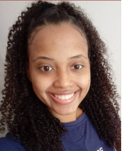

Sobre mim
Quem sou eu?
Sou estudante de Sistema de informação na Universidade Federal da Bahia, tenho 26 anos
quilombola, atualmente eu faço parte da coordenação de pescadores e pecadoras na minha comunidade
Formações
Cursei TI no Instituto Federal da Bahia até o 2º semestre
Estagiaria e aprendiz de desenvolvimento web na radio de Salinas da Margarida
Front-end e back-end na plataforma Alura